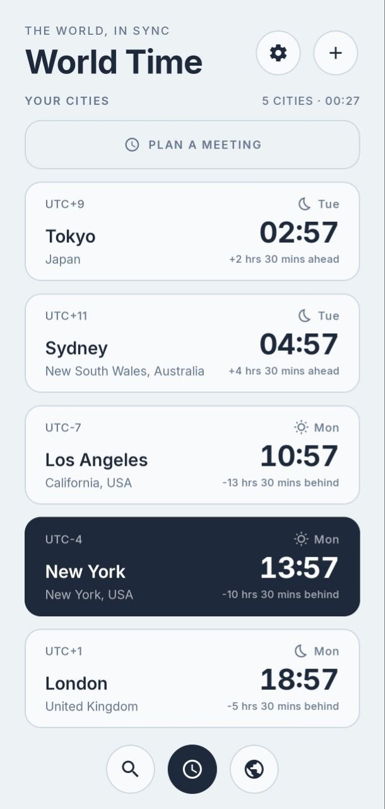
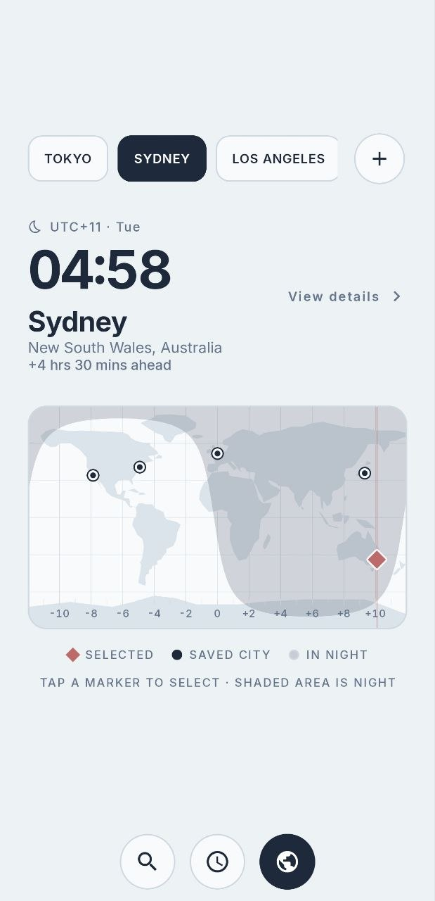
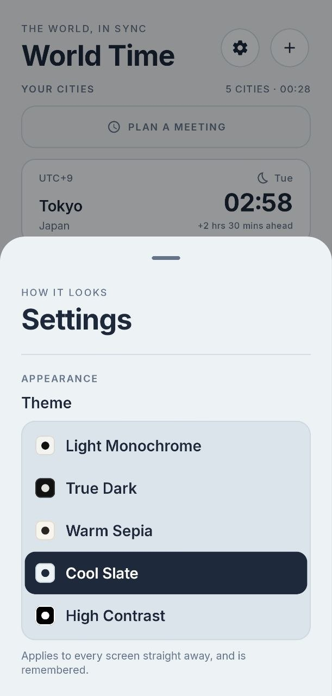

Offline-first
No accounts, no tracking, no connection required. Your clocks are always a glance away.
A minimalist, lightweight, and offline-first World Clock for Android.
7.9 MB · Android 8.0+ · Works fully offline

Screenshots


Features
No accounts, no tracking, no connection required. Your clocks are always a glance away.
A real-time day/night canvas map shows where the sun is shining — at a glance.
Every clock ticks on the exact second, kept in sync by a precise, battery-friendly timer.
Switch the whole board between 12-hour and 24-hour time with one tap.
Add cities fast — built-in search plus automatic duplicate prevention.
Built with Kotlin, Jetpack Compose and Proto DataStore. Fast, small, no bloat.